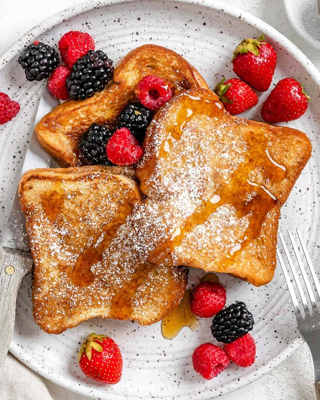

French Toast

Ingredients:
- ⅔ cup milk
- 2 large eggs
- 1 teaspoon vanilla extract (Optional)
- ¼ teaspoon ground cinnamon (Optional)
- salt to taste
- 6 thick slices bread
- 1 tablespoon unsalted butter, or more as needed
Instructions:
- Gather all ingredients.
- Whisk milk, eggs, vanilla, cinnamon, and salt together in a shallow bowl.
- Lightly butter a griddle or skillet and heat over medium-high heat.
- Dunk bread in the egg mixture, soaking both sides.
- Transfer to the hot skillet and cook until golden, 3 to 4 minutes per side.
- Serve Hot.